Working with sdmTMB models in gratia
Source:vignettes/articles/sdmTMB-support.Rmd
sdmTMB-support.RmdUse {gratia} to extract and plot effects and check response distributions from models fitted with {sdmTMB}. Effect plots show individual terms, such as a smooth or a contrast between survey years. For predictions and model checks, we show how to account for spatial and temporal random effects.
We use a Pacific cod survey to demonstrate smooths, survey-year effects, prediction maps and residual checks. Smaller simulated examples then show breakpoint curves, logistic curves and coefficients that vary over time. The diagnostics article explains the shared ideas behind residuals, dependence and posterior predictive checks.
Fit a delta-Gamma model to survey catches
We adapt the Pacific cod survey examples in sdmTMB’s introduction
and delta-model
article. The data are trawl tows in Queen Charlotte Sound, British
Columbia. Biomass density is measured in kg/km²; X and
Y are UTM coordinates in kilometres. We retain all survey
years and use a persistent spatial field and separate year-specific
fields. We add a factor for survey year, set the depth smooth’s basis
dimension to six, and use the introduction’s 10 km mesh cutoff.
You need the optional package sdmTMB >= 1.2.0 and
models fitted with its {RTMB} backend, which is the default. Refit older
models or {TMB} fits with
control = sdmTMBcontrol(backend = "rtmb"). {mgcv} supplies
the smooth syntax. The example also uses {dplyr}, {tidyr}, {ggplot2} and
{patchwork}. Fitting and simulation cost more than plotting an ordinary
GAM, so we use modest simulation counts. Load the packages and survey
data, then summarise the number of tows, fraction of zero catches and
mean density in each year.
library("sdmTMB")
library("gratia")
load_mgcv()
library("dplyr")
library("ggplot2")
library("patchwork")
set.seed(1401)
cod <- pcod
cod$year_f <- factor(cod$year)
cod |>
group_by(year) |>
summarise(tows = n(), proportion_zero = mean(density == 0),
mean_density = mean(density), .groups = "drop")
#> # A tibble: 9 × 4
#> year tows proportion_zero mean_density
#> <int> <int> <dbl> <dbl>
#> 1 2003 232 0.565 29.2
#> 2 2004 230 0.487 64.8
#> 3 2005 224 0.442 68.2
#> 4 2007 255 0.588 17.4
#> 5 2009 233 0.592 22.2
#> 6 2011 251 0.610 44.1
#> 7 2013 240 0.442 40.2
#> 8 2015 238 0.479 53.5
#> 9 2017 240 0.625 25.2The zero proportions and means vary between years. A mean calculated from the observed tows is also influenced by where those tows occurred; it is not an area-standardised biomass index. Map the observations by year to see where the survey sampled and how catches vary across its area.
ggplot(cod, aes(X, Y, colour = density)) +
geom_point(size = 0.8) +
facet_wrap(~year, ncol = 4) +
coord_equal() +
scale_colour_viridis_c(transform = "log1p", breaks = c(0, 10, 100, 1000, 5000)) +
labs(x = "Easting (km)", y = "Northing (km)",
colour = "Density (kg/km²)")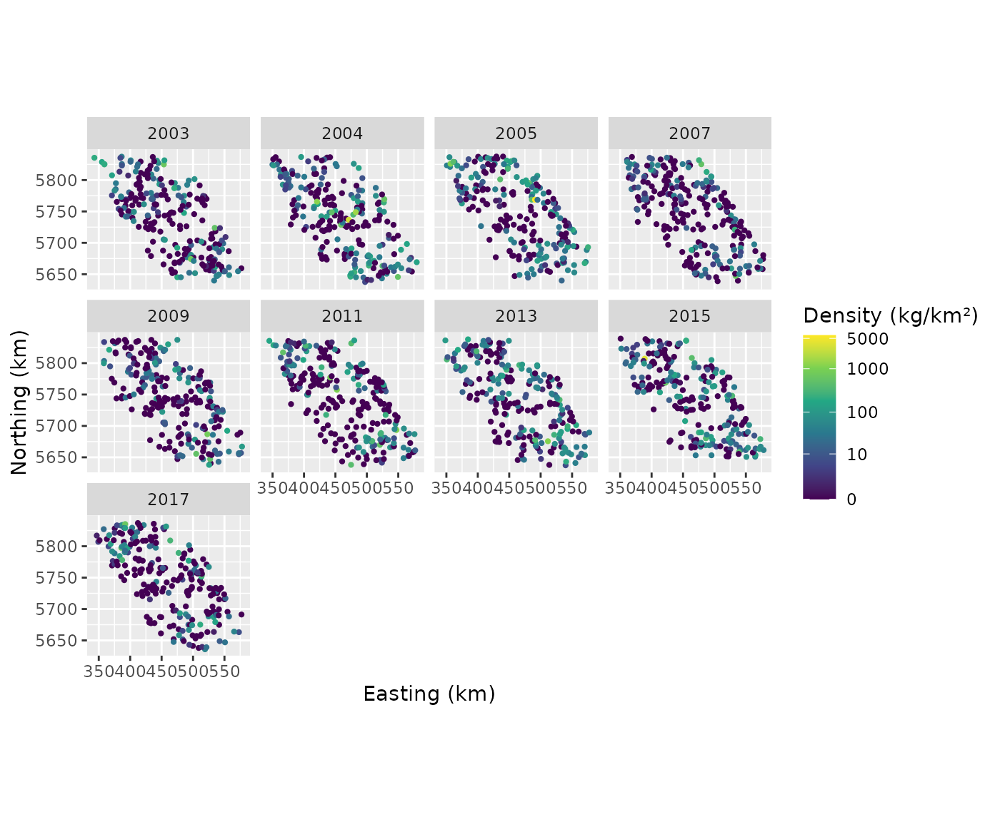
The colour scale uses log1p(), the logarithm of one plus
density, to distinguish the many smaller catches while retaining zeros
and the largest catches. There are many exact zeros and a long positive
tail. A delta-Gamma model separates the chance of
catching cod from the density when cod are caught. Its first component
models whether density is positive using a binomial distribution with a
logit link. Its second models positive density using a Gamma
distribution with a log link. The expected density over all tows is
E(Y_i) = \Pr(Y_i > 0)\,E(Y_i\mid Y_i>0).
Depth need not have the same effect on both components. Each has its
own smooth coefficients and spatial fields. A persistent field
represents geographical variation shared across survey years; an
independent field for each survey year represents additional
geographical variation in that year. These fields allow nearby tows to
share unexplained variation. We choose independent year fields because
this survey did not run every year. An AR1 model would require an
explicit decision about missing time steps and assumptions about
correlation between years. Build a mesh for the spatial fields, then fit
a depth smooth and separate survey-year means in each response
component. The mesh cutoff is in kilometres, matching X and
Y.
cod_mesh <- make_mesh(cod, c("X", "Y"), cutoff = 10)
cod_fit <- sdmTMB(
density ~ year_f + s(depth, k = 6),
data = cod, mesh = cod_mesh, time = "year",
spatial = "on", spatiotemporal = "iid", family = delta_gamma()
)
sanity(cod_fit)The year factor gives each survey year a different intercept in each response component. The two components use the same smooth basis and estimate their own coefficients, so the depth curves can differ. If you specify two formulas for a delta model, sdmTMB requires the smooth terms to match.
sanity() checks estimation and convergence. The fitted
positive-density field has a range of about 12 km, close to the 10 km
mesh cutoff. That suggests checking whether predictions change when the
mesh is finer.
Extract and plot depth effects
Start with smooths() to find the labels used to select
the depth smooth in each response component.
smooths(cod_fit)
#> [1] "s(depth)" "s.1(depth)"s(depth) belongs to the encounter component and
s.1(depth) to the positive component. The .1
suffix identifies the second predictor. Pass both labels to
draw() and use wrap = FALSE to obtain separate
plots whose axis labels can be customised before combining them.
depth_panels <- draw(cod_fit, select = smooths(cod_fit), n = 100,
wrap = FALSE)
(depth_panels[[1]] + labs(x = "Depth (m)", y = "Contribution to log odds")) |
(depth_panels[[2]] + labs(x = "Depth (m)", y = "Contribution to log density"))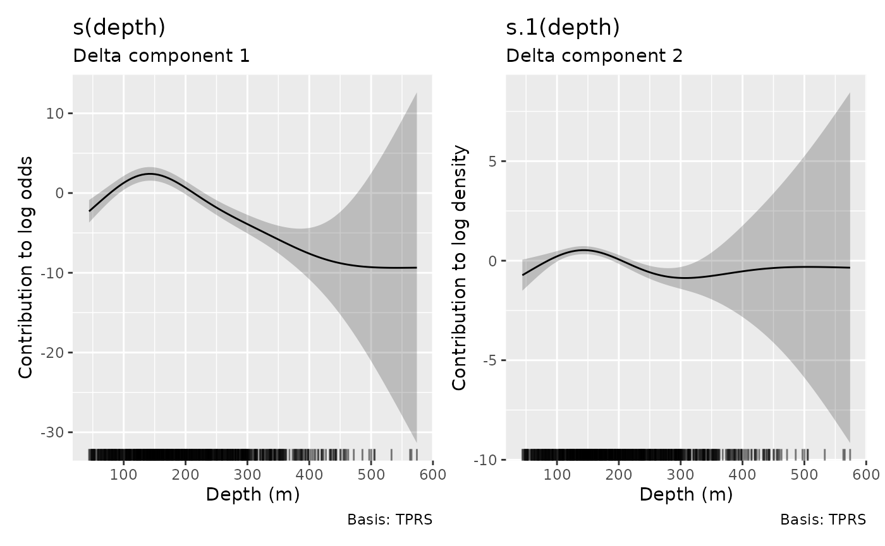
The first curve contributes to the log odds of encounter and the second to the log of mean positive density. Both curves peak near 140–150 m. The encounter curve falls especially sharply in deeper water. The rug marks along the axes show how few tows support the curves at the greatest depths.
These plots show the depth term alone on each component’s link scale.
A full prediction also includes the intercept, survey-year effect and
fields. The pointwise bands include the uncertainty in the intercept by
default. Use overall_uncertainty = FALSE for uncertainty in
the depth term alone.
Use smooth_estimates() to save the estimated effects and
their standard errors. Here we locate the largest contribution on each
smooth’s evaluation grid to summarise the depth at its peak.
depth_effects <- smooth_estimates(cod_fit, n = 100, interval = "confidence")
depth_effects |>
group_by(.smooth, .model) |>
slice_max(.estimate, n = 1)
#> # A tibble: 2 × 10
#> # Groups: .smooth, .model [2]
#> .smooth .type .by .estimate .se depth .crit .lower_ci .upper_ci .model
#> <chr> <chr> <chr> <dbl> <dbl> <dbl> <dbl> <dbl> <dbl> <chr>
#> 1 s(depth) TPRS NA 2.41 0.435 140. 1.96 1.55 3.26 Delta …
#> 2 s.1(depth) TPRS NA 0.529 0.102 146. 1.96 0.330 0.729 Delta …The reported peak depths locate the maxima on the 100-point evaluation grid. The broad intervals in deeper water reflect sparse observations there, so the intermediate-depth peak is better supported than the shape of the deep-water tail.
smooth_coefs() returns coefficients in the constrained
mgcv basis. They can be useful for reproducing a curve from its basis
matrix, but individual coefficients do not have the interpretation of a
linear depth slope:
smooth_coefs(cod_fit, select = "s(depth)")
#> s(depth).1 s(depth).2 s(depth).3 s(depth).4 s(depth).5
#> -4.4187762 2.5591291 1.0347497 -0.2311792 2.8689836Compare survey-year effects
Use parametric_terms() to find the year-effect labels
and parametric_effects() to extract them. Select
year_f and year_f.1 to compare changes in
encounter and positive density separately. Setting
overall_uncertainty = FALSE requests uncertainty in the
year contrasts alone.
parametric_terms(cod_fit)
#> year_f year_f.1
#> "year_f" "year_f"
year_effects <- parametric_effects(cod_fit,
terms = c("year_f", "year_f.1"), overall_uncertainty = FALSE)
year_plot <- draw(year_effects)
year_plot[[1]] <- year_plot[[1]] +
labs(x = "Survey year", y = "Change in log odds", subtitle = "Encounter")
year_plot[[2]] <- year_plot[[2]] +
labs(x = "Survey year", y = "Change in log positive density",
subtitle = "Positive density")
year_plot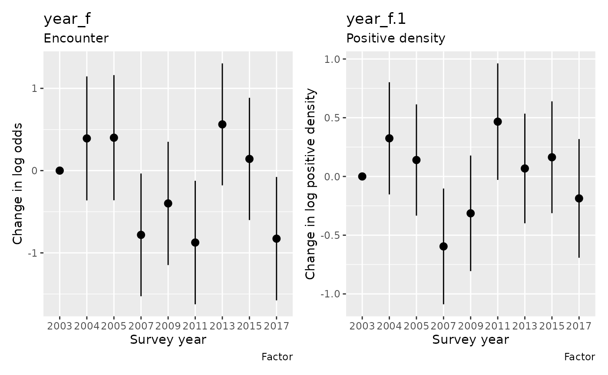
Under the fitted treatment contrasts, 2003 is the reference year and has a zero contribution. The other estimates are changes from that reference on their respective link scales, after accounting for depth and fields. For the positive-density component, exponentiating the contribution gives a ratio of conditional mean positive density relative to 2003. For the encounter component it gives an odds ratio, not a probability ratio. A difference in the positive component alone is not a change in total expected density: occurrence also matters. For example, the 2011 estimate is lower than 2003 for encounter but higher for positive density. Looking at either component alone would miss this distinction.
Here we requested term-only uncertainty. The reference year
consequently has no uncertainty interval for its contrast with
itself. Request the default overall_uncertainty = TRUE
to include intercept uncertainty in the plotted parametric
contributions. Use full predictions to estimate actual densities.
Plot a smooth interaction between depth and survey year
The delta model above gives each component a common depth curve and separate year means. A different question is whether the shape of the depth association changed through time. We now adapt the binomial encounter model in sdmTMB’s introduction: replace its quadratic depth effect with a joint smooth of depth and survey year, while retaining the spatial and independent year-specific fields and every survey tow. This extension focuses on encounter; the delta model remains the analysis for combined encounter and positive catch density.
A tensor
product smooth uses a separate basis for each covariate and combines
them to fit a surface. This lets us control smoothness along depth (in
metres) and time (in years) separately. Fit the encounter model with
t2() to allow the depth curve to change smoothly across
survey years.
cod$year_centered <- cod$year - 2011
cod_encounter <- sdmTMB(
present ~ t2(depth, year_centered, k = c(5, 4)),
data = cod, mesh = cod_mesh, time = "year", family = binomial(),
spatial = "on", spatiotemporal = "iid"
)
sanity(cod_encounter)The joint smooth allows a gradual relationship across actual elapsed
years. The year-specific fields still represent geographical departures
in each survey, with no correlation assumed between those fields. A
smooth temporal relationship in the mean and correlation between random
fields are different assumptions. Here the smooth includes both depth
and year main effects, so we do not add the previous year_f
factor. Centring year at 2011 only changes its coordinate origin.
The optimiser converges, but sanity() flags large
standard errors for smoothing parameters. Inspect the standard
deviations that determine how strongly different parts of the surface
are penalised.
sdmTMB::tidy(cod_encounter, effects = "ran_pars") |>
filter(grepl("sd__", term))
#> # A tibble: 3 × 5
#> term estimate std.error conf.low conf.high
#> <chr> <dbl> <dbl> <dbl> <dbl>
#> 1 sd__t2(depth,year_centered)_1 0.0000311 NA 0 Inf
#> 2 sd__t2(depth,year_centered)_2 0.00166 NA 0 Inf
#> 3 sd__t2(depth,year_centered)_3 50.1 NA 27.2 92.2Two standard deviations are close to zero, indicating strong
smoothing for those parts of the surface. The wide intervals show that
the data give little information about those smoothing parameters. Plot
the estimated surface with draw() and label the vertical
axis with the actual survey years.
tensor_panel <- draw(cod_encounter, n_2d = 30, dist = 0.1,
wrap = FALSE)[[1]]
tensor_panel +
scale_y_continuous(breaks = c(-8, -4, 0, 4, 6),
labels = c(2003, 2007, 2011, 2015, 2017)) +
labs(x = "Depth (m)", y = "Survey year") +
guides(fill = guide_colourbar(title = "Log-odds\ncontribution"))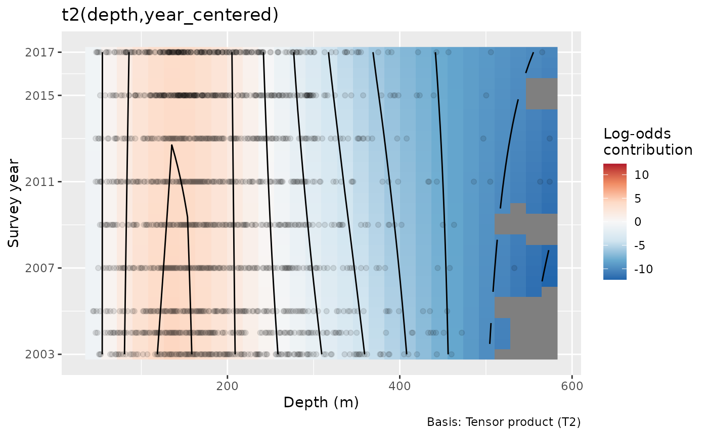
The mostly vertical contours indicate that depth dominates the
displayed association; the preferred intermediate-depth region changes
little through time. The surface is a contribution to log odds, without
the intercept or fields. Its colours show fitted contributions; standard
errors are available from smooth_estimates().
dist = 0.1 masks combinations far from the observed
depth-year pairs after rescaling each variable to range from zero to
one. The sparse deep-water observations limit what we can say about
changes at those depths.
For custom calculations, get_smooths_by_id() retrieves
the fitted mgcv smooth object. Its penalty list records the
independently smoothed parts of the surface; smooth_coefs()
retrieves the corresponding coefficient vector:
encounter_smooth <- get_smooths_by_id(cod_encounter, id = 1)[[1]]
length(encounter_smooth$S)
#> [1] 3
length(smooth_coefs(cod_encounter, select = smooths(cod_encounter)[1]))
#> [1] 19The three penalties control different parts of one fitted surface,
represented here by nineteen coefficients. Use
smooth_estimates(cod_encounter, data = ...) to evaluate
that surface and its standard errors at specific depth-year combinations
before carrying the results into another calculation.
Map expected density with full predictions
Full predictions require both components and the fields. Use sdmTMB’s public prediction method for this calculation. For a standard delta-Gamma model we can independently verify the response mean from the two link-scale predictors:
link_prediction <- predict(cod_fit)
response_prediction <- predict(cod_fit, type = "response")
combined_mean <- plogis(link_prediction$est1) * exp(link_prediction$est2)
max(abs(combined_mean - response_prediction$est))
#> [1] 0For other delta links, use the fitting package’s response transformation; this product of inverse links does not apply unchanged to a coupled Poisson-link delta model.
For mapping, use the supplied survey-area grid. Restricting the display to 2011 and 2017 keeps the figure readable; the fit still uses every survey year.
map_data <- replicate_df(qcs_grid, "year", c(2011L, 2017L))
map_data$year_f <- factor(map_data$year, levels = levels(cod$year_f))
cod_map <- predict(cod_fit, newdata = map_data, type = "response")
ggplot(cod_map, aes(X, Y, fill = est)) +
geom_raster() +
facet_wrap(~year) +
coord_equal() +
scale_fill_viridis_c(transform = "sqrt") +
labs(x = "Easting (km)", y = "Northing (km)",
fill = "Mean density\n(kg/km²)")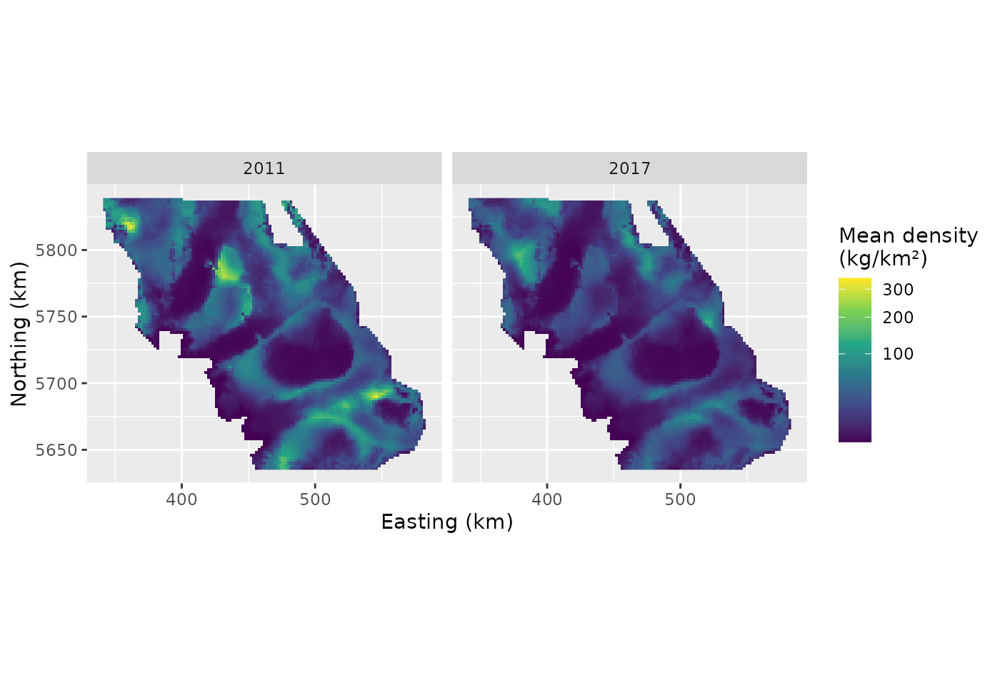
The map combines encounter probability, positive density and
geographical variation. A location can have low expected density through
either a low encounter probability or a low positive mean. The maps show
fitted mean surfaces. sdmTMB’s predict(..., nsim = ...)
supplies joint prediction draws for estimating uncertainty at each
location or in derived quantities. Setting re_form = NA
predicts with the spatial and spatiotemporal fields set to zero. With
nonlinear links this can give different expected densities from
averaging predictions over new field draws.
Choose how residual checks use spatial and temporal effects
Residual checks use the response distribution implied by the full
model and need to specify how to handle the random fields. The sdmTMB residual-checking
article demonstrates why the choice of fields matters. gratia’s
default follows its approach of drawing the fitted effects once from
their approximate joint posterior, with fixed coefficients and
covariance parameters held at their estimates. Set
gratia.diagnostics.field_seed to reproduce the same draw
across diagnostic plots.
cod_field_options <- options(gratia.diagnostics.field_seed = 1402L)
qq_plot(cod_fit, type = "quantile", seed = 1404)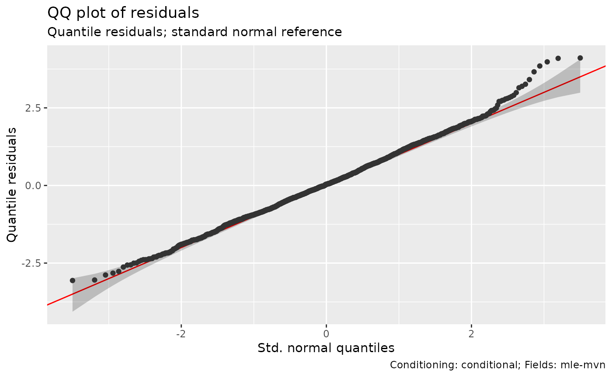
Quantile residuals locate each observation within its fitted response distribution. For zero catches, the calculation draws a value uniformly between zero and the fitted probability of a zero, then converts it to a normal score. The model treats responses as independent for the selected fields, so the QQ plot uses a standard normal reference and pointwise bands conditional on that draw. To check how much catches vary across possible fields, use the marginal check below, which draws new fields.
The upper tail rises above the reference, suggesting that some
positive catches are larger than expected under the fitted model. The
positive-component check below helps locate this departure. Change
gratia.diagnostics.field_seed to see whether it persists
across draws. The seed argument controls randomisation at
the zeros.
Examine geographical patterns as well as the pooled residual distribution:
cod_residuals <- cod
cod_residuals$residual <- quantile_residuals(cod_fit,
type = "quantile", seed = 1404)
ggplot(cod_residuals, aes(X, Y, colour = residual)) +
geom_point(size = 0.8) +
facet_wrap(~year, ncol = 4) +
coord_equal() +
scale_colour_gradient2(low = "blue", mid = "white", high = "red") +
labs(x = "Easting (km)", y = "Northing (km)",
colour = "Quantile\nresidual")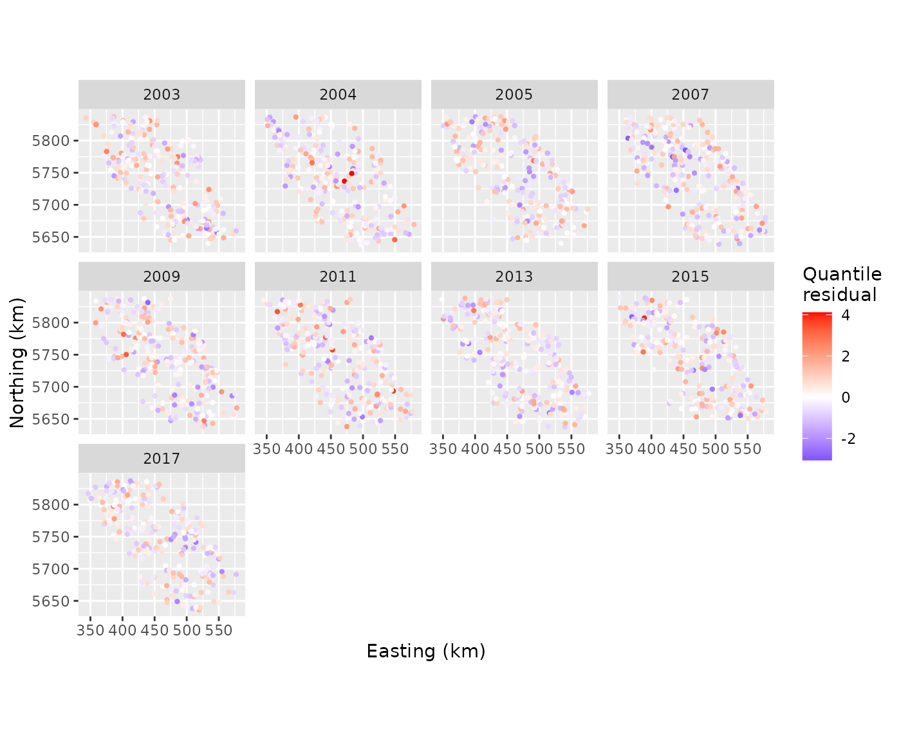
Clusters of residuals with the same sign deserve attention even if a QQ plot looks acceptable. Consider omitted spatial covariates, inadequate field resolution, or a response distribution that cannot represent the local variation. Use geographical distances to investigate these patterns: observation-order lags do not describe how far apart the survey tows are.
Three further choices answer different questions:
| Choice | What varies between reference data sets? | Useful interpretation |
|---|---|---|
field_method = "mle-eb" |
Response errors with fitted effects fixed at their estimates | Inspect errors at the estimated fields |
field_method = "mle-mvn-integrated" |
Response errors and draws of the fitted effects | Check variation allowing for uncertainty in the fitted effects |
conditioning = "marginal" |
Response errors and new spatial and year fields from the fitted field distribution | Check the variation implied by new field realisations |
The default field_method = "mle-mvn" draws fitted
effects once and then fixes them. Empirical-Bayes (mle-eb)
residuals instead use the estimated fields directly. They can look too
concentrated because those fields were estimated from the same
responses; sdmTMB does not recommend them for goodness-of-fit testing.
Compare the three alternatives with separate QQ plots below. We use 49
reference draws to keep this comparison quick.
cod_reference_options <- options(gratia.diagnostics.marginal_draws = 49L,
gratia.diagnostics.marginal_seed = 1403L)
qq_plot(cod_fit, type = "quantile", field_method = "mle-eb", seed = 1404)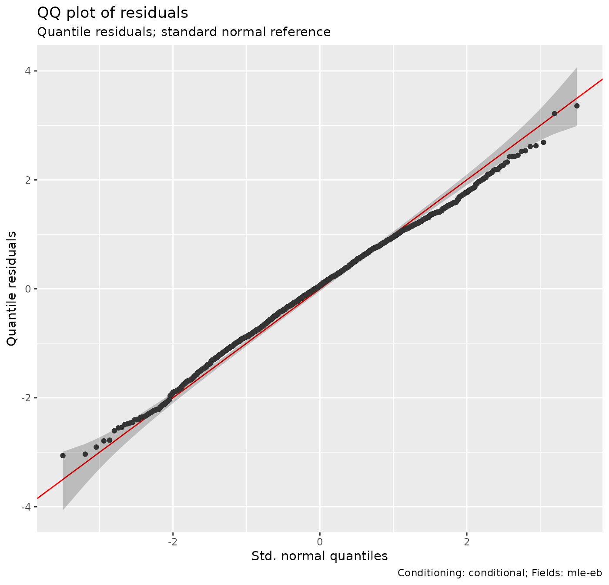
qq_plot(cod_fit, type = "quantile",
field_method = "mle-mvn-integrated", n_simulate = 49, seed = 1404)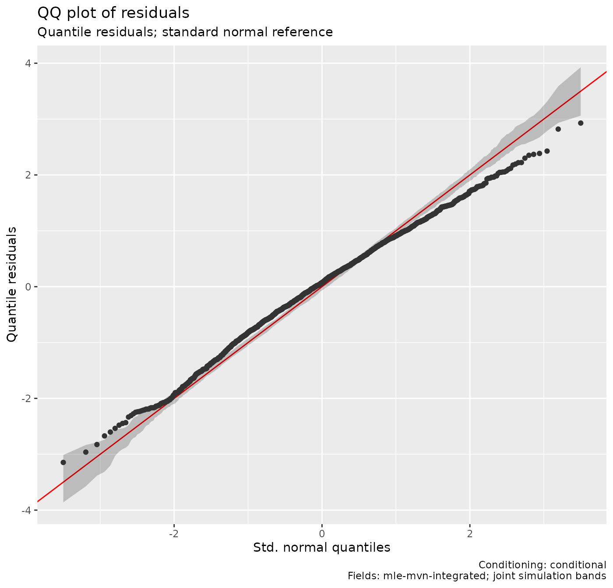
qq_plot(cod_fit, type = "quantile", conditioning = "marginal",
n_simulate = 49, seed = 1404)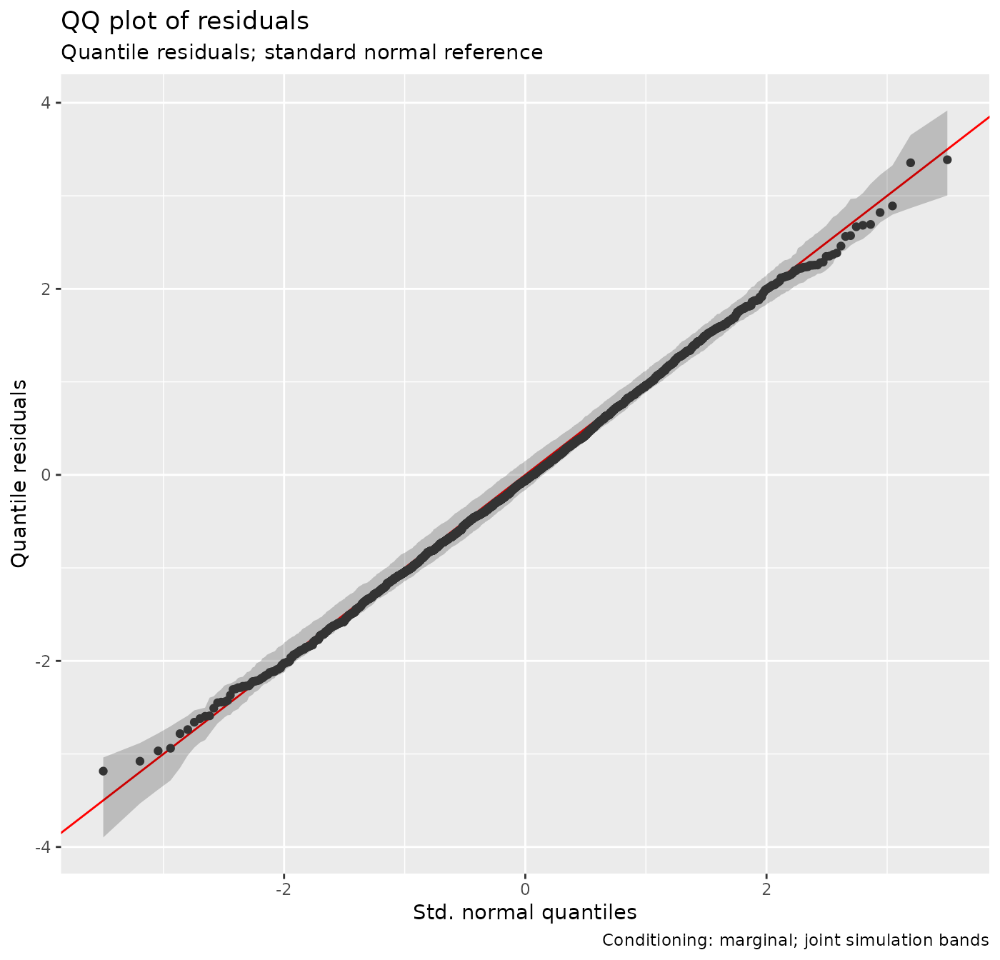
The integrated and marginal calculations compare observations with simulated responses. The integrated calculation draws uncertain fitted effects, including penalised smooth coefficients, while holding fixed coefficients and covariance parameters at their estimates. The marginal calculation generates new spatial and temporal effects while retaining the fitted smooths. gratia simulates complete response datasets to retain the dependence induced by shared fields when calculating reference bands.
The integrated and marginal QQ plots rank each observation against
its own simulated responses. Which responses it is compared with depends
on whether the simulations draw fitted or new fields. With 49 reference
draws, the most extreme ranks can only distinguish a few levels of tail
probability. Increase gratia.diagnostics.marginal_draws and
n_simulate if you need more precise tail comparisons.
Check encounter and positive-density components separately
Component checks help locate a mismatch hidden in a full-response check. For the positive component, only observed positive tows are retained; the binomial component retains the complete presence/absence sample.
qq_plot(cod_fit, type = "quantile", component = "positive", seed = 1404)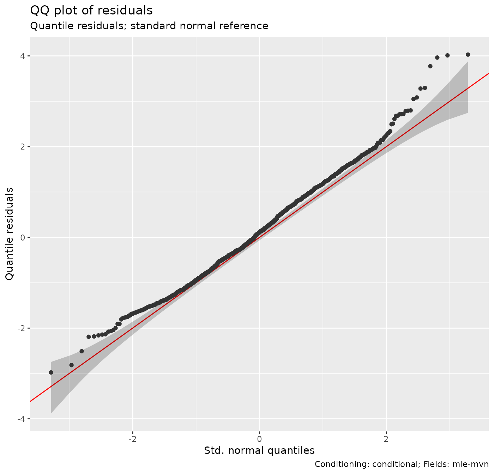
posterior_predictive_plot(cod_fit, component = "binomial",
n = 25, seed = 1405)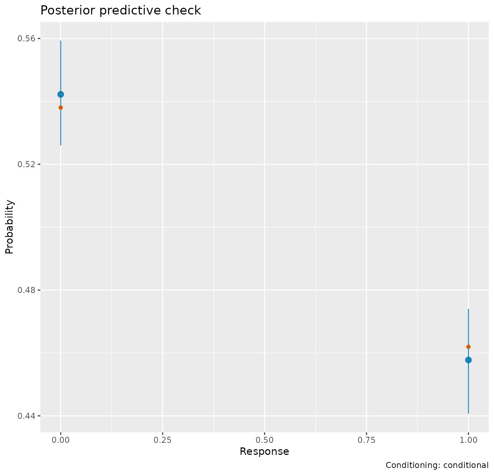
The upper tail still rises above the reference in the positive-catch
QQ plot. To see whether a heavier tail describes the largest catches
better, refit with sdmTMB::delta_lognormal() and repeat the
positive-component check.
The occurrence plot compares the observed proportions at 0 and 1 with proportions in replicated data. Its intervals include parameter and fitted-field uncertainty. This checks the overall occurrence frequency; the residual map can identify geographical patterns that cancel in that overall proportion.
Posterior predictive checks draw the fixed and smooth coefficients,
other distribution parameters and fitted fields together from the
approximate joint posterior. With
conditioning = "marginal", they simulate new fields using
the covariance parameters from each draw. Use field_method
for the residual checks above.
Use posterior_samples() for checks of quantities
important to the survey analysis. Here we compare the observed fraction
of zero tows and 95th percentile of density with their values in
replicated data. Conditional draws allow uncertainty in the fitted
fields; marginal draws generate new fields.
cod_summaries <- function(x) {
c(proportion_zero = mean(x == 0), density_95th = unname(quantile(x, 0.95)))
}
observed_summary <- cod_summaries(cod$density)
conditional_draws <- posterior_samples(cod_fit, n_draws = 25, seed = 1405)
marginal_draws <- posterior_samples(cod_fit, n_draws = 25,
conditioning = "marginal", seed = 1405)
summarise_draws <- function(x, description) {
x |>
group_by(.draw) |>
summarise(proportion_zero = mean(.response == 0),
density_95th = quantile(.response, 0.95), .groups = "drop") |>
tidyr::pivot_longer(-.draw, names_to = "summary", values_to = "value") |>
mutate(check = description)
}
summary_draws <- bind_rows(
summarise_draws(conditional_draws, "Uncertain fitted fields"),
summarise_draws(marginal_draws, "New fields")
)
observed_table <- data.frame(summary = names(observed_summary),
observed = unname(observed_summary))
summary_draws |>
group_by(check, summary) |>
summarise(median = median(value), lower = quantile(value, 0.05),
upper = quantile(value, 0.95), .groups = "drop") |>
left_join(observed_table, by = "summary")
#> # A tibble: 4 × 6
#> check summary median lower upper observed
#> <chr> <chr> <dbl> <dbl> <dbl> <dbl>
#> 1 New fields density_95th 187. 143. 214. 157.
#> 2 New fields proportion_zero 0.518 0.414 0.630 0.538
#> 3 Uncertain fitted fields density_95th 160. 144. 183. 157.
#> 4 Uncertain fitted fields proportion_zero 0.542 0.526 0.559 0.538The conditional comparison asks whether new responses around the
inferred survey fields reproduce these summaries. The marginal
comparison asks whether new field realisations at the survey locations
reproduce them. About 54% of observed tows are zero, and the observed
95th percentile is about 157 kg/km². Both fall within the displayed
predictive ranges, while the conditional QQ plot still identifies
unusually large catches further into the positive tail. The 95th
percentile and the largest catches describe different parts of that
tail. Marginal ranges are wider because the simulated fields can give a
large part of the area high or low density. These are 90% predictive
ranges from just 25 replicates; increase n_draws to assess
whether a discrepancy persists.
Plot breakpoint and logistic curves
sdmTMB also offers two structured alternatives to a smooth.
breakpt(x) fits a line up to an estimated breakpoint and a
constant beyond it. logistic(x) fits a sigmoid curve.
gratia draws these as parametric effects, with one curve for each
component of a delta model. The argument of either term must name a
column in the fitting data, following sdmTMB’s formula restrictions.
We simulate two Gaussian responses to a covariate x,
sampled uniformly between zero and two. One mean increases linearly to
x = 0.9 and then levels off; the other follows a logistic
curve with midpoint x = 0.8. Both have independent noise
with standard deviation 0.15.
set.seed(312)
threshold_data <- data.frame(x = runif(400, 0, 2))
threshold_data$breakpt_y <- 0.4 + 1.8 * pmin(threshold_data$x, 0.9) +
rnorm(nrow(threshold_data), sd = 0.15)
threshold_data$logistic_y <- 0.4 +
2.2 * plogis(log(19) * (threshold_data$x - 0.8) / 0.6) +
rnorm(nrow(threshold_data), sd = 0.15)Fit a breakpoint model to the first response and a logistic model to the second. Spatial fields are switched off so these fits isolate the curve shapes. Starting values place the breakpoint within the observed range and give the logistic curve a positive distance between its 50% and 95% locations.
breakpt_fit <- sdmTMB(
breakpt_y ~ breakpt(x), data = threshold_data, spatial = "off",
control = sdmTMBcontrol(backend = "rtmb",
start = list(b_threshold = matrix(c(1.5, 0.8), ncol = 1)))
)
logistic_fit <- sdmTMB(
logistic_y ~ logistic(x), data = threshold_data, spatial = "off",
control = sdmTMBcontrol(backend = "rtmb",
start = list(b_threshold = matrix(c(0.8, log(0.6), 2), ncol = 1)))
)
sanity(breakpt_fit)
sanity(logistic_fit)Select these curves using terms, as for the survey-year
effects above. parametric_terms() lists their labels. In a
delta model, breakpt(x).1 or logistic(x).1
selects the second component. parametric = FALSE suppresses
threshold curves; selecting smooths with select excludes
parametric effects unless parametric = TRUE is also
supplied.
parametric_terms(breakpt_fit)
#> breakpt(x)
#> "breakpt(x)"
parametric_terms(logistic_fit)
#> logistic(x)
#> "logistic(x)"
threshold_panels <- c(
draw(breakpt_fit, terms = "breakpt(x)", n = 100, wrap = FALSE),
assemble(logistic_fit, terms = "logistic(x)", n = 100)
)
wrap_plots(threshold_panels, ncol = 2)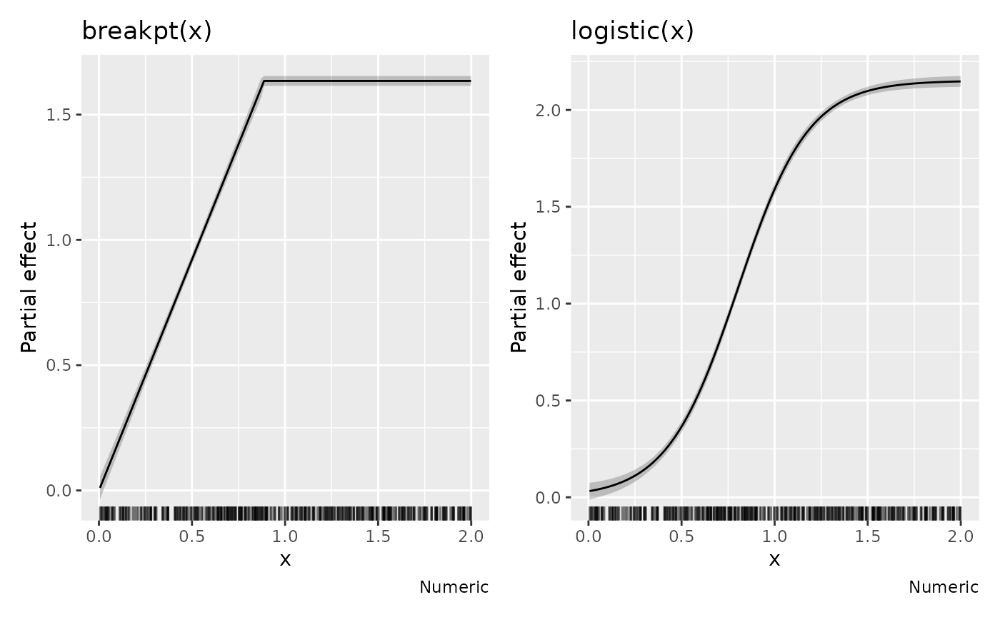
Each curve is its uncentred contribution to the linear predictor. The
intercept is not added to that contribution. The bands use pointwise
delta-method standard errors from the joint covariance of the fitted
threshold parameters. By default, they also include the intercept’s
uncertainty and its covariance with those parameters. Use
overall_uncertainty = FALSE for uncertainty in the
threshold contribution alone. Threshold bands remain pointwise when
interval = "simultaneous" is requested for smooths in the
same model.
By default, n controls the number of plotted covariate
values; breakpoint plots also include the estimated breakpoint so the
line changes slope at the fitted location. Supply data to
evaluate the effect at particular locations. For example, extract the
logistic contribution at three chosen values of x.
parametric_effects(logistic_fit, terms = "logistic(x)",
data = data.frame(x = c(0.25, 0.75, 1.25)),
overall_uncertainty = FALSE)
#> # A tibble: 3 × 5
#> .term .type .value .partial .se
#> <chr> <chr> <dbl> <dbl> <dbl>
#> 1 logistic(x) numeric 0.25 0.112 0.0156
#> 2 logistic(x) numeric 0.75 0.930 0.0351
#> 3 logistic(x) numeric 1.25 1.97 0.0246Plot coefficients that vary through time
A covariate’s coefficient can change through time in sdmTMB. For
example, temperature may have a stronger association with abundance in
some years than in others. The time_varying formula
specifies which coefficients vary, while time_varying_type
defines the process connecting successive values. ~ 1
varies the intercept; ~ 0 + temperature varies just the
temperature coefficient; ~ temperature varies both.
The three processes differ in how they represent the coefficient’s level:
-
"rw"estimates the first coefficient freely and penalises changes between time steps. Omit its corresponding ordinary term from the main formula. If the intercept varies, omit the main formula’s intercept too. -
"rw0"uses a random walk with a mean-zero normal prior on its first value. Include an ordinary coefficient for the baseline effect. -
"ar1"uses a first-order autoregressive process for deviations around zero. Include an ordinary coefficient for the average effect.
We simulate a temperature coefficient that changes over 20 years, with 35 observations per year. Its departures from 0.8 follow an AR1 process, so neighbouring years tend to have similar coefficients. Temperature varies independently between observations. The Gaussian response has mean 0.6 plus that year’s coefficient times temperature, with independent noise of standard deviation 0.65.
set.seed(420)
coefficient_years <- 2005:2024
temperature_coefficient <- 0.8 +
as.numeric(arima.sim(list(ar = 0.72), n = length(coefficient_years), sd = 0.13))
coefficient_data <- data.frame(
year = rep(coefficient_years, each = 35),
temperature = rnorm(length(coefficient_years) * 35)
)
coefficient_data$response <- 0.6 +
rep(temperature_coefficient, each = 35) * coefficient_data$temperature +
rnorm(nrow(coefficient_data), sd = 0.65)Fit the rw, rw0 and ar1
coefficient processes to the same simulated data to compare their
estimated trajectories. Spatial fields are switched off so that the
example focuses on the changing temperature association.
coefficient_fits <- lapply(c("rw", "rw0", "ar1"), function(process) {
main_formula <- if (process == "rw") response ~ 1 else response ~ temperature
sdmTMB(
main_formula, data = coefficient_data, time = "year",
time_varying = ~ 0 + temperature, time_varying_type = process,
spatial = "off", spatiotemporal = "off",
control = sdmTMBcontrol(backend = "rtmb")
)
})
names(coefficient_fits) <- c("rw", "rw0", "ar1")
lapply(coefficient_fits, sanity)
#> $rw
#> $rw$hessian_ok
#> [1] TRUE
#>
#> $rw$eigen_values_ok
#> [1] TRUE
#>
#> $rw$nlminb_ok
#> [1] TRUE
#>
#> $rw$range_ok
#> [1] TRUE
#>
#> $rw$gradients_ok
#> [1] TRUE
#>
#> $rw$se_magnitude_ok
#> [1] TRUE
#>
#> $rw$se_na_ok
#> [1] TRUE
#>
#> $rw$sigmas_ok
#> [1] TRUE
#>
#> $rw$all_ok
#> [1] TRUE
#>
#>
#> $rw0
#> $rw0$hessian_ok
#> [1] TRUE
#>
#> $rw0$eigen_values_ok
#> [1] TRUE
#>
#> $rw0$nlminb_ok
#> [1] TRUE
#>
#> $rw0$range_ok
#> [1] TRUE
#>
#> $rw0$gradients_ok
#> [1] TRUE
#>
#> $rw0$se_magnitude_ok
#> [1] TRUE
#>
#> $rw0$se_na_ok
#> [1] TRUE
#>
#> $rw0$sigmas_ok
#> [1] TRUE
#>
#> $rw0$all_ok
#> [1] TRUE
#>
#>
#> $ar1
#> $ar1$hessian_ok
#> [1] TRUE
#>
#> $ar1$eigen_values_ok
#> [1] TRUE
#>
#> $ar1$nlminb_ok
#> [1] TRUE
#>
#> $ar1$range_ok
#> [1] TRUE
#>
#> $ar1$gradients_ok
#> [1] TRUE
#>
#> $ar1$se_magnitude_ok
#> [1] TRUE
#>
#> $ar1$se_na_ok
#> [1] TRUE
#>
#> $ar1$sigmas_ok
#> [1] TRUE
#>
#> $ar1$all_ok
#> [1] TRUEdraw() plots the full coefficient over time: the fitted
trajectory for rw, or the ordinary coefficient plus its
temporal deviation for rw0 and ar1. Points
mark the modelled time steps, straight lines connect them, and a ribbon
shows the pointwise interval. The following panels are ordered
rw, rw0 and ar1.
coefficient_panels <- lapply(coefficient_fits, function(fit) {
assemble(fit, terms = "time_varying(temperature)")[[1L]]
})
wrap_plots(coefficient_panels, ncol = 3)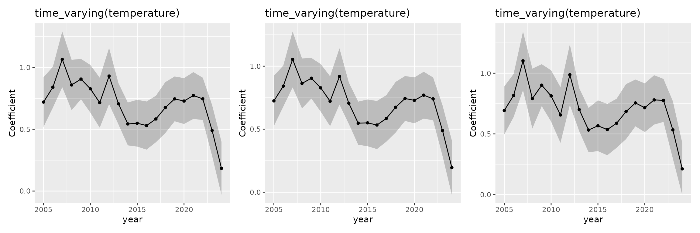
Use time_varying_style = "pointrange" to show interval
bars at each time step. This also works when drawing saved
estimates.
coefficient_estimates <- parametric_effects(coefficient_fits$ar1,
terms = "time_varying(temperature)")
draw(coefficient_estimates, time_varying_style = "pointrange")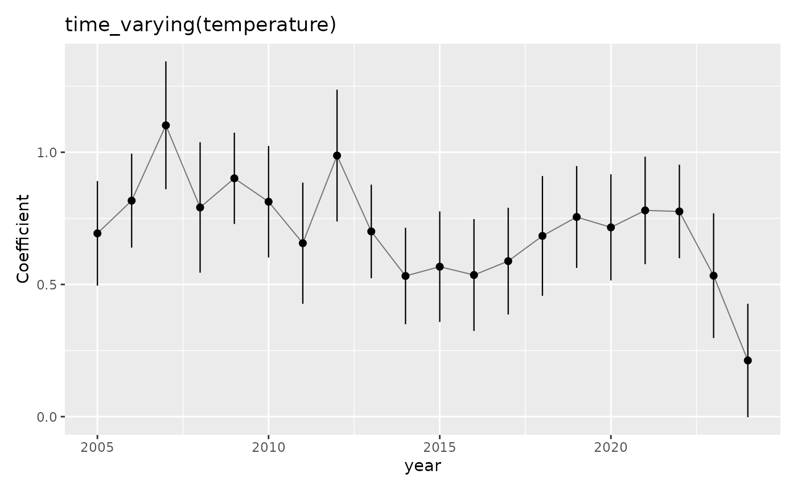
For a coefficient written as b_t = \beta + \gamma_t, the variance is
\operatorname{Var}(b_t) = \operatorname{Var}(\beta) + \operatorname{Var}(\gamma_t) + 2\operatorname{Cov}(\beta, \gamma_t).
gratia uses this joint covariance when combining the ordinary coefficient and temporal deviations. A slope’s interval includes uncertainty in that slope’s ordinary coefficient, without adding uncertainty from a separate response intercept. The time-varying panels always retain uncertainty in the full coefficient, with pointwise intervals at each modelled year.
Use parametric_terms() to find the available selectors.
To extract selected years, supply their values in the model’s time
column through data. These must be modelled time steps;
n does not create new coefficient estimates between them.
The following call extracts the temperature coefficient for 2005, 2010
and 2020 from the AR1 fit.
parametric_terms(coefficient_fits$ar1)
#> temperature time_varying(temperature)
#> "temperature" "time_varying(temperature)"
parametric_effects(coefficient_fits$ar1,
terms = "time_varying(temperature)",
data = data.frame(year = c(2005, 2010, 2020)))
#> # A tibble: 3 × 5
#> .term .type .value .partial .se
#> <chr> <chr> <int> <dbl> <dbl>
#> 1 time_varying(temperature) time_varying 2005 0.693 0.101
#> 2 time_varying(temperature) time_varying 2010 0.813 0.108
#> 3 time_varying(temperature) time_varying 2020 0.716 0.102Choose methods for your own sdmTMB model
Use smooth_estimates() to save smooth contributions and
parametric_effects() for regression terms, threshold curves
and changing coefficients. Both return estimates that
draw() can plot. For complete predictions, including
spatial and temporal fields, use sdmTMB’s prediction method as in the
density-map example. Use qq_plot() to examine residuals and
posterior_predictive_plot() to compare replicated response
summaries with the observations.
Use sdmTMB’s prediction and plotting methods to display the spatial
and temporal fields themselves. The gratia effect plots in this article
describe formula terms. Their intervals use sdmTMB’s joint covariance;
the mgcv options unconditional = TRUE and
frequentist = TRUE are unavailable. See the
diagnostic_support help topic for supported response
families and diagnostic options.